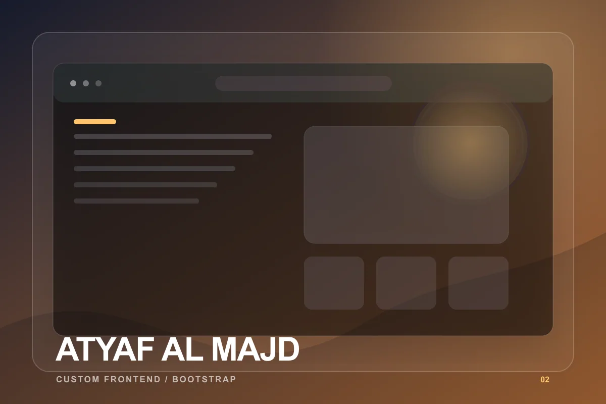
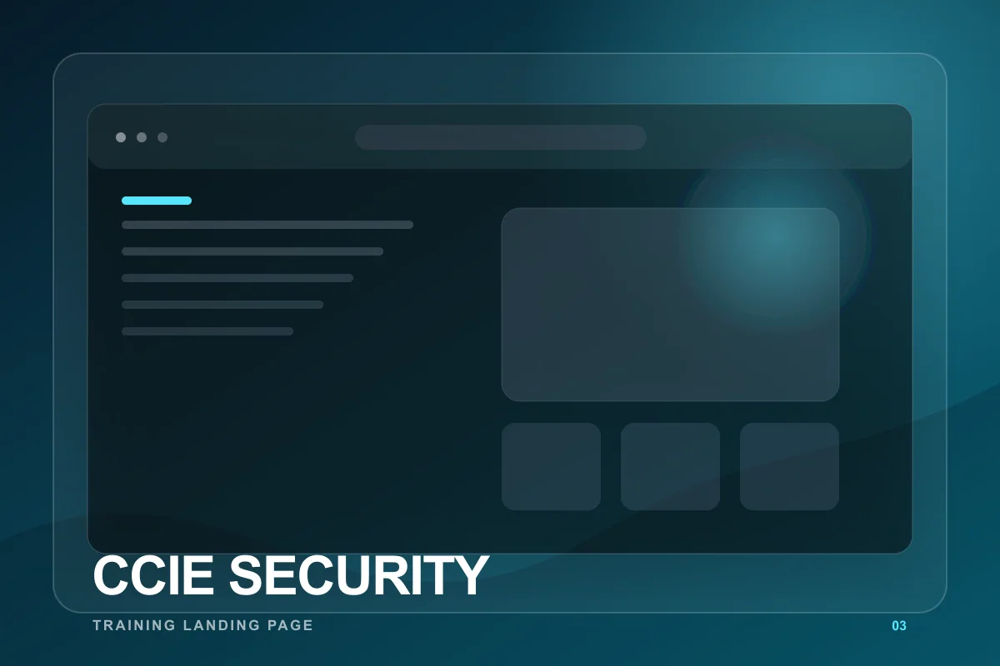
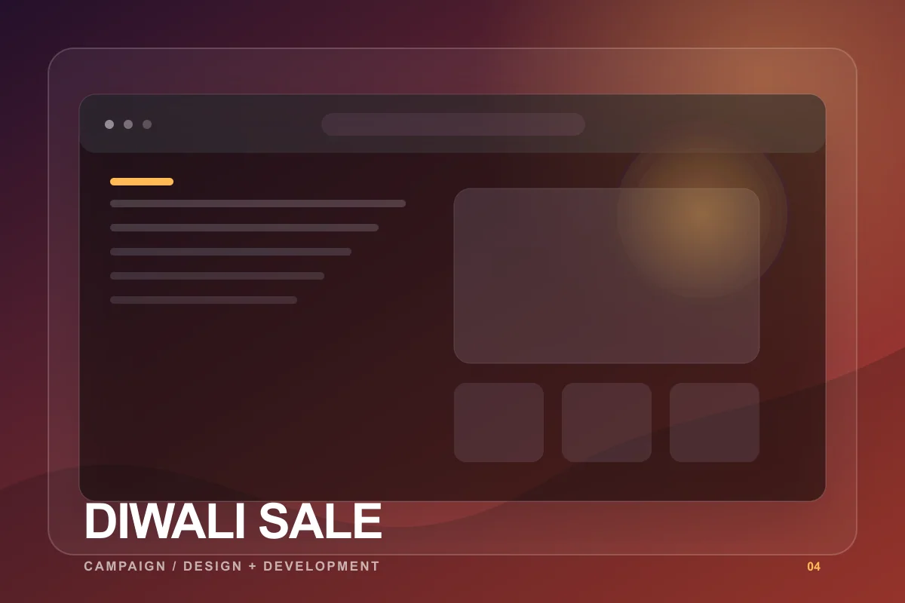
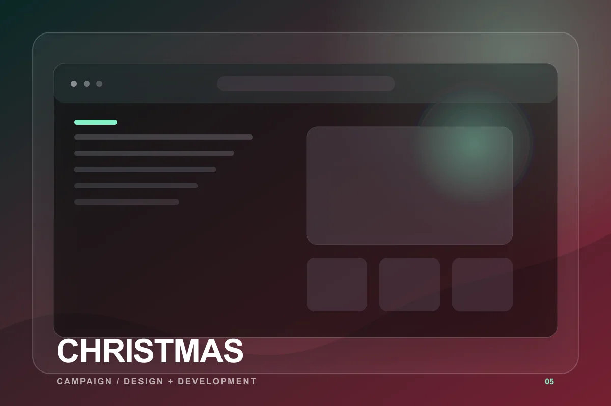
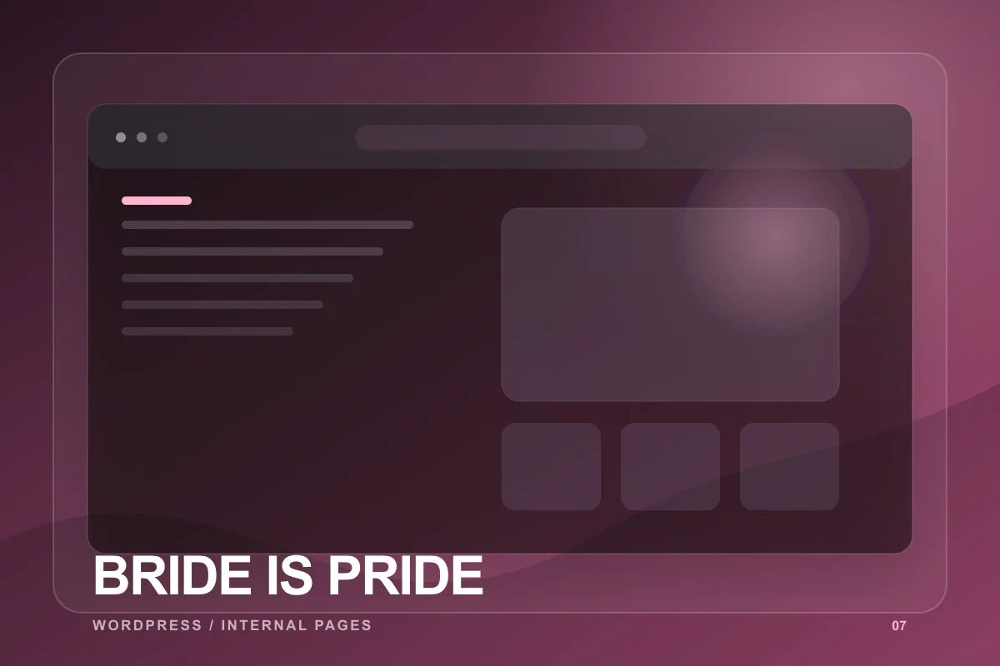

01
01
WordPressResume project
UTC India
A product-led WordPress website for UTC India's insulated ware and kitchen product catalogue.
Seven projects documented in the 2024 resume — from WordPress product websites to custom frontend builds, training pages, and seasonal campaigns.
Filter by project type or search by title and technology.
01
A product-led WordPress website for UTC India's insulated ware and kitchen product catalogue.

02A custom business website developed from scratch with a responsive Bootstrap frontend.

03A focused training landing page created for Octa Networks' CCIE Security offering.

04A seasonal campaign landing page designed and developed for Octa Networks.

05A festive landing-page experience designed and developed for a seasonal campaign.
 06
06
A financial education website designed and developed to present the academy online.

07Internal WordPress pages designed and developed as part of the wider website experience.
No projects match that search yet.
A Node.js web scraper fetched ecommerce product details and prepared them for bulk upload to another website — a resume-documented improvement to data acquisition, without an invented metric.
Read the case-study notes for documented scope, technical approach, constraints, and honest result language.
Read case studiesThis portfolio is grounded in the projects and experience listed on Umair's resume. Explore the live work, review the process, and request professional references during a conversation.
View verified work